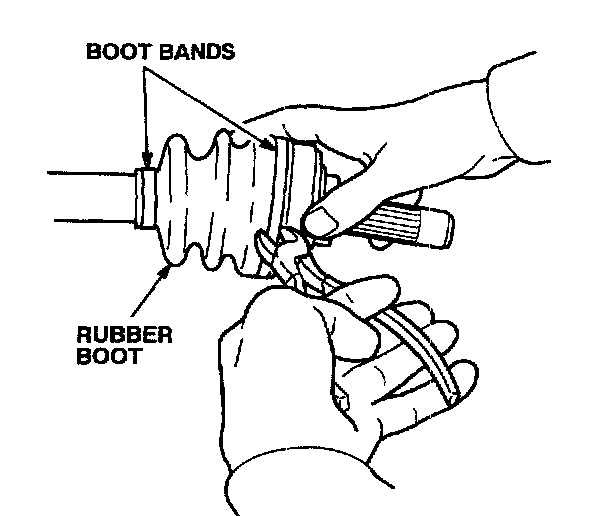
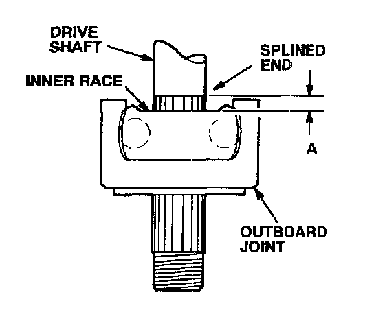
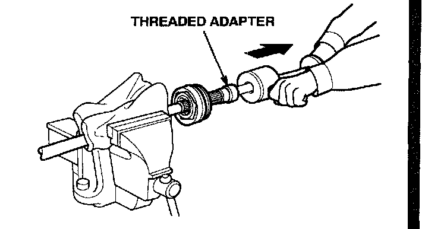
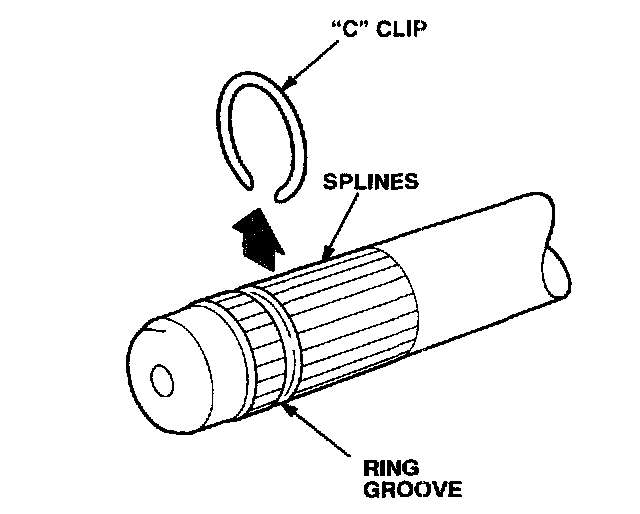
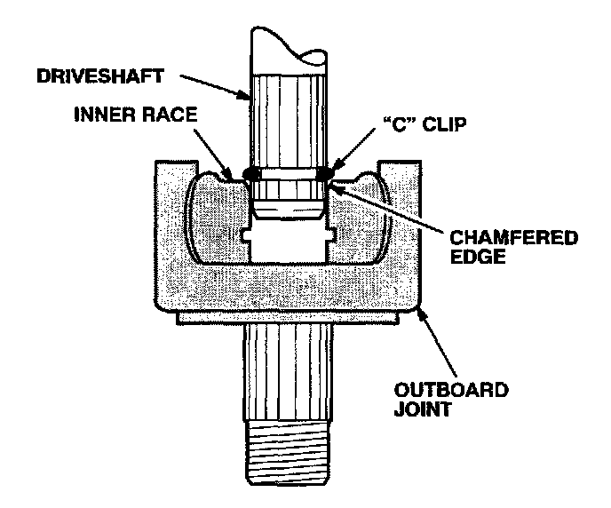
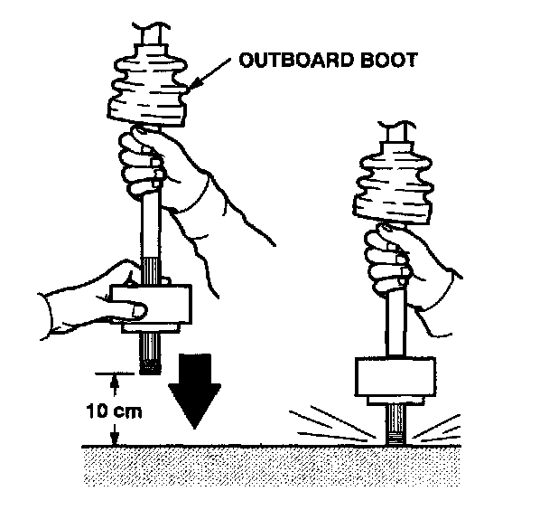
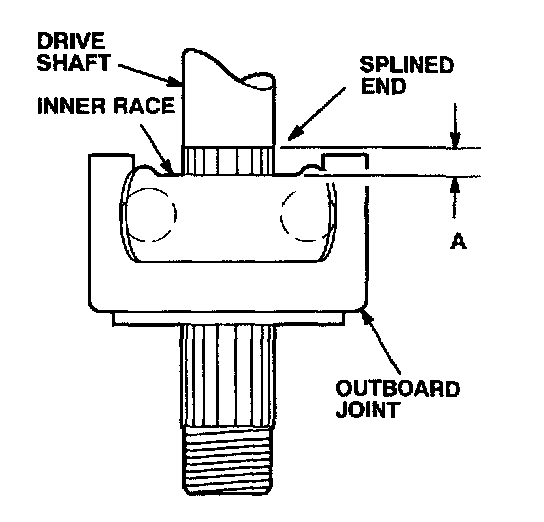

Drivetrain - Creaking Noise While Turning
92-009February 1, 1999
Creaking Noise While Turning
(Supersedes 92-009, dated February 7, 1995)
** Indicates updated information **
Black bars in illustrations indicate updated information.
SYMPTOM
A clicking noise is heard while making right or left turns at 10 mph or less.
PROBABLE CAUSE
^ Worn outboard driveshaft joint.
^ The outboard driveshaft joint boot has split, allowing contamination to enter the joint and damage it.
** CORRECTIVE ACTION
Replace the noisy outboard driveshaft joint. **
WARRANTY CLAIM INFORMATION
In warranty:
The normal warranty applies.
Out of warranty:
Any repair performed after warranty expiration may be eligible for goodwill consideration by the District Technical Manager or your Zone Office. You must request consideration, and get a decision, before starting work.
Defect code: 042
Contention code: B07
Failed part: Use the replacement part number
Skill level: Repair Technician
PARTS INFORMATION
** Refer to the Parts Catalog or Parts Information Bulletin 95-0004 for the appropriate outboard joint kit application and part number.
REQUIRED SPECIAL TOOLS
Threaded Adapter:
T/N 097XAC-001010A; 22 mm
T/N 07XAC-001020A; 24 mm
T/N 07XAC-001030A; 26 mm **
DIAGNOSIS
(Driving Method)
1. Drive the car in a circle in an open parking lot at approximately 10 mph with the brakes lightly applied.
2. Have an assistant stand in the center of the circle and listen for the clicking noise.
3. Drive the car in the opposite direction. The assistant should be able to tell which axle is making the noise.
DIAGNOSIS
(On-Hoist Method)
1. Raise the car on a hoist and start the engine.
2. With the transmission in first gear (manual transmission) or D4 (automatic transmission), increase the engine speed to 2000 rpm.
3. While maintaining the same throttle position, apply the brakes to load the engine speed to 1500 rpm.
4. Turn the wheels slowly to full left and full right positions. Have an assistant listen to determine which axle is making the noise.
NOTE:
A driveshaft with a light degree of noise may not be detected by this on-hoist method.
REPAIR PROCEDURE
1. Remove the driveshaft as described in Section 16 of the appropriate service manual.

2. Use diagonal cuffers to cut the two boot bands and the outboard joint boot, then remove them from the driveshaft.

3. Wipe off the grease to expose the outboard joint. Measure and record distance "A" (from the splined end of the driveshaft to the inner race) as a reference for reassembly.

4. Carefully clamp the driveshaft in a vise.
5. Remove the outboard joint using a threaded adapter (see REQUIRED SPECIAL TOOLS) and 5 a commercially available 5/8 x 18 slide hammer.
6. Remove and discard the "C" clip from the driveshaft. Clean and inspect the driveshaft splines and ring groove for burrs or other defects.

7. Install the new outboard joint boot provided in the kit. Slide it slowly onto the driveshaft to avoid damaging the boot.
8. Install the new "C" clip in the ring groove of the driveshaft.

9. Insert the new outboard joint onto the driveshaft. Make sure the "C" clip is centered on the shaft and is resting against the chamfered edge of the inner race.
10. Remove the driveshaft from the vise.

11. To drive the outboard joint on the rest of the way, pick up the assembly and let it fall from about 10 cm (4 to 5 inches) onto a hard surface.
NOTICE
Do not use a hammer; excessive force may damage the driveshaft.

12. Measure distance "A" (from the end of the splines to the inner race of the joint). If the distance is more than your measurement in Step 3, repeat Step 11.
13. When distance "A" equals your measurement in Step 3, the "C" clip should be seated in the joint. Tap on the inner race with a plastic hammer to make sure the joint does not move on the drivesh aft.
14. Fit the small end of the boot into the boot groove on the driveshaft.
15. Install the small boot band provided in the kit. Bend both sets of locking tabs over, then lightly tap them flat.
16. Pack the outboard joint with the grease included in the kit. Pack the outboard boot with the remaining grease, then fit the boot over the outboard joint.
17. Install the large boot band provided in the kit. Bend both sets of locking tabs over, then lightly tap them flat.
18. Reinstall the driveshaft assembly in the car. Refer to Section 16 of the appropriate service manual.

Disclaimer